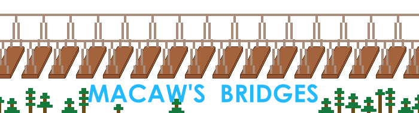
Macaw的桥梁 Macaw's Bridges
共 152 个条目 · mcwbridges
版本: 3.1.2 · 来源: mcw-bridges-3.1.2-mc1.21.1neoforge.jar
Connect the world with bridges!
MC百科中文名: Macaw的桥梁
MC百科页面: https://www.mcmod.cn/class/2040.html（Macaw的桥梁 (Macaw's Bridges)）
MC百科检索: site:mcmod.cn Macaw's Bridges
官方介绍 （Modrinth · 中文版由 GLM AI 翻译，仅供参考）
这个简单的模组添加了各式各样的桥梁。最新版本改进了桥梁楼梯的游戏内模型。桥梁上还可以用火把照明。
每一款桥梁模型都经过了改进与调整，能更好地融入原版玩法。
我们推荐使用最新的 2.1.0 版本，它优化了性能，还包含大量改进。
欢迎到我们的 Macaw's Discord 提出你的想法。
Macaw's Bridges 视频展示
需要服务器吗？使用折扣码 sketchmacaw 在 BisectHosting 购买 Minecraft 服务器，首月立享 75 折优惠，尽情畅玩吧！
Q: 有计划向下移植到 1.15.2 或更低版本吗？\ A: 可能性很小，但说不定哪天会出一个最后的 1.12.2 版本……
Q: 我可以在自己的整合包中使用你的模组吗？\ A: 可以，只需注明出处，并附上 Modrinth 页面的链接。
Q: 我做好了翻译，应该发到哪里给你？\ A: 发到 Github 或我们的 Discord 服务器都可以。
由 GLM AI 翻译，仅供参考
查看英文原文（Modrinth）
This simple mod adds a variety of bridges. The newest version improves the in game models for Bridge Stairs. Bridges can be lighted with torches.
Every bridge model has been improved and changed to fit even better in vanila gameplay.
We recommend using the newest 2.1.0 since it improves performance and has lots of improvements.
Suggest your ideas on our Macaw's discord.
Macaw's Bridges Video Showcase
Do you need a server? Grab 25% off your first month on a BisectHosting Minecraft server using the code sketchmacaw and enjoy playing!
Q: Do you have any plans on backporting to 1.15.2 and lower?\ A: Very unlikely, but a last 1.12.2 version could happen at some time..
Q: Can I use your mods in my modpack?\ A: Yes, just credit us and with a reference to the modrinth page
Q: I have a translation for you, where can I send it to you?\ A: Either on Github or on our discord server
资料来源：Macaw's Bridges
物品与方块
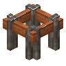
金合欢桥墩mcwbridges:acacia_bridge_pier · 方块
 金合欢桥
金合欢桥mcwbridges:acacia_log_bridge_middle · 方块
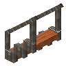
金合欢桥阶梯mcwbridges:acacia_log_bridge_stair · 方块
 金合欢铁路桥
金合欢铁路桥mcwbridges:acacia_rail_bridge · 方块
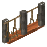
绳索金合欢桥阶梯mcwbridges:acacia_rope_bridge_stair · 方块
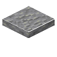
安山岩桥mcwbridges:andesite_bridge · 方块
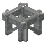
安山岩桥墩mcwbridges:andesite_bridge_pier · 方块
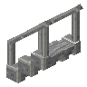
安山岩桥阶梯mcwbridges:andesite_bridge_stair · 方块
 亚红桥
亚红桥mcwbridges:asian_red_bridge · 方块
 亚红桥墩
亚红桥墩mcwbridges:asian_red_bridge_pier · 方块
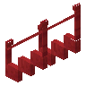
亚红桥阶梯mcwbridges:asian_red_bridge_stair · 方块
 护栏安山岩桥
护栏安山岩桥mcwbridges:balustrade_andesite_bridge · 方块
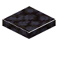
护栏黑石桥mcwbridges:balustrade_blackstone_bridge · 方块
 护栏砖桥
护栏砖桥mcwbridges:balustrade_bricks_bridge · 方块
 护栏圆石桥
护栏圆石桥mcwbridges:balustrade_cobblestone_bridge · 方块
 护栏深板岩砖桥
护栏深板岩砖桥mcwbridges:balustrade_deepslate_bricks_bridge · 方块
 护栏深板岩瓦桥
护栏深板岩瓦桥mcwbridges:balustrade_deepslate_tiles_bridge · 方块
 护栏闪长岩桥
护栏闪长岩桥mcwbridges:balustrade_diorite_bridge · 方块
 护栏末地石砖桥
护栏末地石砖桥mcwbridges:balustrade_end_stone_bricks_bridge · 方块
 护栏花岗岩桥
护栏花岗岩桥mcwbridges:balustrade_granite_bridge · 方块
 护栏苔藓石桥
护栏苔藓石桥mcwbridges:balustrade_mossy_cobblestone_bridge · 方块
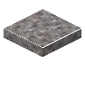
护栏苔藓石砖桥mcwbridges:balustrade_mossy_stone_bricks_bridge · 方块
 护栏泥砖桥
护栏泥砖桥mcwbridges:balustrade_mud_bricks_bridge · 方块
 护栏下界砖桥
护栏下界砖桥mcwbridges:balustrade_nether_bricks_bridge · 方块
 护栏红砂岩桥
护栏红砂岩桥mcwbridges:balustrade_orange_sandstone_bridge · 方块
 护栏海晶石砖桥
护栏海晶石砖桥mcwbridges:balustrade_prismarine_bricks_bridge · 方块
 护栏砂石桥
护栏砂石桥mcwbridges:balustrade_sandstone_bridge · 方块
 护栏石砖桥
护栏石砖桥mcwbridges:balustrade_stone_bricks_bridge · 方块
 竹桥
竹桥mcwbridges:bamboo_bridge · 方块
竹桥墩mcwbridges:bamboo_bridge_pier · 方块
竹桥阶梯mcwbridges:bamboo_bridge_stair · 方块
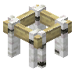
桦木桥墩mcwbridges:birch_bridge_pier · 方块桦木桥
mcwbridges:birch_log_bridge_middle · 方块
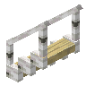
桦木桥阶梯mcwbridges:birch_log_bridge_stair · 方块
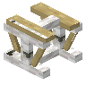
桦木铁路桥mcwbridges:birch_rail_bridge · 方块
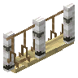
绳索桦木桥阶梯mcwbridges:birch_rope_bridge_stair · 方块
 黑石桥
黑石桥mcwbridges:blackstone_bridge · 方块
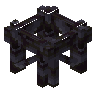
黑石桥墩mcwbridges:blackstone_bridge_pier · 方块
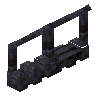
黑石桥阶梯mcwbridges:blackstone_bridge_stair · 方块
 砖桥
砖桥mcwbridges:brick_bridge · 方块
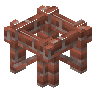
砖制桥墩mcwbridges:brick_bridge_pier · 方块
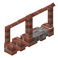
砖制桥阶梯mcwbridges:brick_bridge_stair · 方块桥梁灯
mcwbridges:bridge_lantern · 方块
 桥梁火把
桥梁火把mcwbridges:bridge_torch · 方块
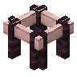
樱花木桥墩mcwbridges:cherry_bridge_pier · 方块
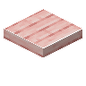
樱花木桥mcwbridges:cherry_log_bridge_middle · 方块
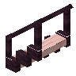
樱花木桥阶梯mcwbridges:cherry_log_bridge_stair · 方块
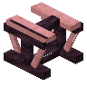
樱花木铁路桥mcwbridges:cherry_rail_bridge · 方块
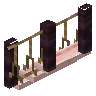
绳索樱花木桥阶梯mcwbridges:cherry_rope_bridge_stair · 方块
 圆石桥
圆石桥mcwbridges:cobblestone_bridge · 方块
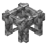
圆石桥墩mcwbridges:cobblestone_bridge_pier · 方块
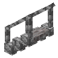
圆石桥阶梯mcwbridges:cobblestone_bridge_stair · 方块
 绯红木桥墩
绯红木桥墩mcwbridges:crimson_bridge_pier · 方块
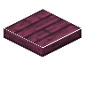
绯红木桥mcwbridges:crimson_log_bridge_middle · 方块
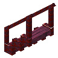
绯红木桥阶梯mcwbridges:crimson_log_bridge_stair · 方块
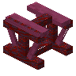
绯红木铁路桥mcwbridges:crimson_rail_bridge · 方块
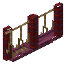
绳索绯红木桥阶梯mcwbridges:crimson_rope_bridge_stair · 方块
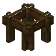
深色橡木桥墩mcwbridges:dark_oak_bridge_pier · 方块深色橡木桥
mcwbridges:dark_oak_log_bridge_middle · 方块
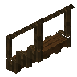
深色橡木桥阶梯mcwbridges:dark_oak_log_bridge_stair · 方块
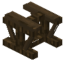
深色橡木铁路桥mcwbridges:dark_oak_rail_bridge · 方块
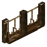
绳索深色橡木桥阶梯mcwbridges:dark_oak_rope_bridge_stair · 方块
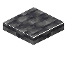
深板岩砖桥mcwbridges:deepslate_brick_bridge · 方块
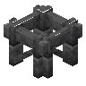
深板岩砖桥墩mcwbridges:deepslate_brick_bridge_pier · 方块
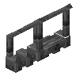
深板岩砖桥阶梯mcwbridges:deepslate_brick_bridge_stair · 方块
 深板岩瓦桥
深板岩瓦桥mcwbridges:deepslate_tile_bridge · 方块
 深板岩瓦桥墩
深板岩瓦桥墩mcwbridges:deepslate_tile_bridge_pier · 方块
 深板岩瓦桥阶梯
深板岩瓦桥阶梯mcwbridges:deepslate_tile_bridge_stair · 方块
 闪长岩桥
闪长岩桥mcwbridges:diorite_bridge · 方块
 闪长岩桥墩
闪长岩桥墩mcwbridges:diorite_bridge_pier · 方块
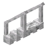
闪长岩桥阶梯mcwbridges:diorite_bridge_stair · 方块
 去皮竹桥
去皮竹桥mcwbridges:dry_bamboo_bridge · 方块
 去皮竹桥墩
去皮竹桥墩mcwbridges:dry_bamboo_bridge_pier · 方块
 去皮竹桥阶梯
去皮竹桥阶梯mcwbridges:dry_bamboo_bridge_stair · 方块
 末地石砖桥
末地石砖桥mcwbridges:end_stone_bricks_bridge · 方块
 末地石砖桥墩
末地石砖桥墩mcwbridges:end_stone_bricks_bridge_pier · 方块
 末地石砖桥阶梯
末地石砖桥阶梯mcwbridges:end_stone_bricks_bridge_stair · 方块
 玻璃桥
玻璃桥mcwbridges:glass_bridge · 方块
 玻璃桥墩
玻璃桥墩mcwbridges:glass_bridge_pier · 方块
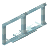
玻璃桥阶梯mcwbridges:glass_bridge_stair · 方块
 花岗岩桥
花岗岩桥mcwbridges:granite_bridge · 方块
 花岗岩桥墩
花岗岩桥墩mcwbridges:granite_bridge_pier · 方块
 花岗岩桥阶梯
花岗岩桥阶梯mcwbridges:granite_bridge_stair · 方块
 铁桥
铁桥mcwbridges:iron_bridge · 方块
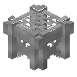
铁桥墩mcwbridges:iron_bridge_pier · 方块
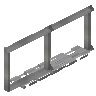
铁桥阶梯mcwbridges:iron_bridge_stair · 方块
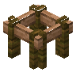
丛林木桥墩mcwbridges:jungle_bridge_pier · 方块
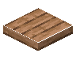
丛林木桥mcwbridges:jungle_log_bridge_middle · 方块
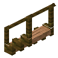
丛林木桥阶梯mcwbridges:jungle_log_bridge_stair · 方块
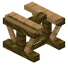
丛林木铁路桥mcwbridges:jungle_rail_bridge · 方块
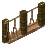
绳索丛林木桥阶梯mcwbridges:jungle_rope_bridge_stair · 方块
 红木桥墩
红木桥墩mcwbridges:mangrove_bridge_pier · 方块
 红木桥
红木桥mcwbridges:mangrove_log_bridge_middle · 方块
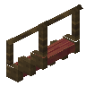
红木桥阶梯mcwbridges:mangrove_log_bridge_stair · 方块
 红木铁路桥
红木铁路桥mcwbridges:mangrove_rail_bridge · 方块
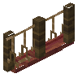
绳索红木桥阶梯mcwbridges:mangrove_rope_bridge_stair · 方块
 苔藓石桥
苔藓石桥mcwbridges:mossy_cobblestone_bridge · 方块
 苔藓石桥墩
苔藓石桥墩mcwbridges:mossy_cobblestone_bridge_pier · 方块
 苔藓石桥阶梯
苔藓石桥阶梯mcwbridges:mossy_cobblestone_bridge_stair · 方块
 苔藓石砖桥
苔藓石砖桥mcwbridges:mossy_stone_brick_bridge · 方块
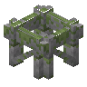
苔藓石桥墩mcwbridges:mossy_stone_bridge_pier · 方块
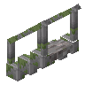
苔藓石桥阶梯mcwbridges:mossy_stone_bridge_stair · 方块
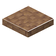
泥砖桥mcwbridges:mud_brick_bridge · 方块泥砖桥墩
mcwbridges:mud_brick_bridge_pier · 方块泥砖桥阶梯
mcwbridges:mud_brick_bridge_stair · 方块
 下界砖桥
下界砖桥mcwbridges:nether_bricks_bridge · 方块
 下界砖桥墩
下界砖桥墩mcwbridges:nether_bricks_bridge_pier · 方块
 下界砖桥阶梯
下界砖桥阶梯mcwbridges:nether_bricks_bridge_stair · 方块
 橡木桥墩
橡木桥墩mcwbridges:oak_bridge_pier · 方块
 橡木桥
橡木桥mcwbridges:oak_log_bridge_middle · 方块橡木桥阶梯
mcwbridges:oak_log_bridge_stair · 方块
 橡木铁路桥
橡木铁路桥mcwbridges:oak_rail_bridge · 方块绳索橡木桥阶梯
mcwbridges:oak_rope_bridge_stair · 方块红砂岩桥
mcwbridges:orange_sandstone_bridge · 方块?Pale Oak Bridge Support
mcwbridges:pale_oak_bridge_pier · 方块?Pale Oak Bridge
mcwbridges:pale_oak_log_bridge_middle · 方块?Pale Oak Bridge Stair
mcwbridges:pale_oak_log_bridge_stair · 方块?Pale Oak Rail Bridge
mcwbridges:pale_oak_rail_bridge · 方块?Rope Pale Oak Bridge Stair
mcwbridges:pale_oak_rope_bridge_stair · 方块
 钳子
钳子mcwbridges:pliers · 物品海晶石砖桥
mcwbridges:prismarine_bricks_bridge · 方块海晶石砖桥墩
mcwbridges:prismarine_bricks_bridge_pier · 方块海晶石砖桥阶梯
mcwbridges:prismarine_bricks_bridge_stair · 方块红砂岩桥墩
mcwbridges:red_sandstone_bridge_pier · 方块红砂岩桥阶梯
mcwbridges:red_sandstone_bridge_stair · 方块
 绳索金合欢桥
绳索金合欢桥mcwbridges:rope_acacia_bridge · 方块绳索桦木桥
mcwbridges:rope_birch_bridge · 方块绳索樱花木桥
mcwbridges:rope_cherry_bridge · 方块绳索绯红木桥
mcwbridges:rope_crimson_bridge · 方块绳索深色橡木桥
mcwbridges:rope_dark_oak_bridge · 方块绳索丛林木桥
mcwbridges:rope_jungle_bridge · 方块绳索红木桥
mcwbridges:rope_mangrove_bridge · 方块
 绳索橡木桥
绳索橡木桥mcwbridges:rope_oak_bridge · 方块?Rope Pale Oak Bridge
mcwbridges:rope_pale_oak_bridge · 方块
 绳索云杉桥
绳索云杉桥mcwbridges:rope_spruce_bridge · 方块绳索诡异木桥
mcwbridges:rope_warped_bridge · 方块
 砂石桥
砂石桥mcwbridges:sandstone_bridge · 方块砂石桥墩
mcwbridges:sandstone_bridge_pier · 方块砂石桥阶梯
mcwbridges:sandstone_bridge_stair · 方块云杉桥墩
mcwbridges:spruce_bridge_pier · 方块
 云杉桥
云杉桥mcwbridges:spruce_log_bridge_middle · 方块云杉桥阶梯
mcwbridges:spruce_log_bridge_stair · 方块
 云杉铁路桥
云杉铁路桥mcwbridges:spruce_rail_bridge · 方块绳索云杉桥阶梯
mcwbridges:spruce_rope_bridge_stair · 方块
 石砖桥
石砖桥mcwbridges:stone_brick_bridge · 方块石砖桥阶梯
mcwbridges:stone_brick_bridge_stair · 方块石制桥墩
mcwbridges:stone_bridge_pier · 方块
 诡异木桥墩
诡异木桥墩mcwbridges:warped_bridge_pier · 方块诡异木桥
mcwbridges:warped_log_bridge_middle · 方块诡异木桥阶梯
mcwbridges:warped_log_bridge_stair · 方块诡异木铁路桥
mcwbridges:warped_rail_bridge · 方块绳索诡异木桥阶梯
mcwbridges:warped_rope_bridge_stair · 方块